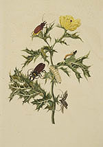
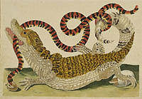

Maria Sibylla Merian
German, 1647-1717
Maria Sibylla Merian’s scientific observations revolutionized
botany and zoology, revealing the mystery of metamorphosis, from
egg through larva and pupa, to adult insect. At the same time, the
surpassing
beauty and vigor of her art can be appreciated on its own merits.
Her father, Matthäus Merian the Elder, was a Swiss naturalist,
printmaker, and publisher. Her stepfather was the Flemish flower
painter Jacob Marell, and from early childhood Merian showed interest
and aptitude
in drawing animals and plants. She published her Blumenbuch in the
1670s. It consisted of graphic models meant to be reproduced in drawings
or embroidery, since women were legally not permitted to work as
painters. At the same time she began drawing from living insects
she had collected
and raised, rather than from preserved specimens, as was customary
at that time.
In 1685, Merian left Nuremberg and her husband, from whom she was
later divorced, and moved with her two daughters and widowed mother
to the Dutch province of West Friesland. After her mother's
death Merian, at the age of 52, set out for the Dutch colony of
Surinam in
South America. It was unheard of for a lone woman to undertake
such a long and dangerous journey. Merian spent two years studying
and drawing
the indigenous flora and fauna until forced to return to Amsterdam
after contracting malaria. There, in 1705, she published the lavishly
illustrated folio, Metamorphosis Insectorum Surinamensium (Metamorphosis
of the Insects of Surinam), the book which established her
international reputation. The two plates shown are from the second,
posthumously
published, edition.

Plate XXIV, Papaver spinosum, now known as Carduus spinosus, Plumeless
thistle, with insects in various stages of metamorphosis

Plate LXIX, Crocodile with a coral snake
Hand-colored copperplate engravings
Dissertatio de Generatione et Metamorphosibus Insectorum Surinamensium,
by Maria Sybilla Merian
Hagæ Comitum, apud Petrum Gosse, 1726.
Rare Books Division